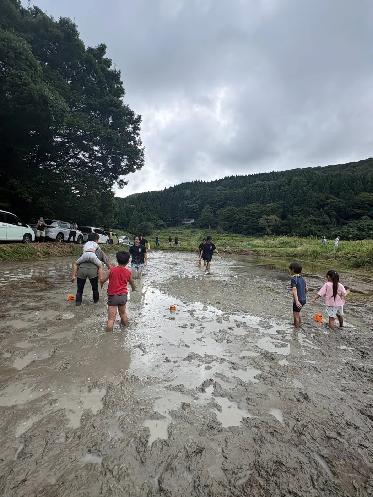

01
現地を知る
まず土地を見る。話を聞く。
企画を先に決めず、土地の状態、周辺環境、地域の希望、使える時期を確認します。現地でしか分からない条件を早めに確認すると、あとからやり直すことを減らせます。
- 土地の状態・水・排水
- 所有者・地域との確認
- 交通・駐車・周辺動線
続けるための仕組み
2026年に企画・開催して分かったことを、次の運営者が使いやすい順番に整理しました。次の活動でも見直しながら使う、公開用の運営メモです。

5つの段階
地域イベントは、企画内容だけでは実施できません。2026年の経験から、準備で確認したことを5つの段階に分けました。
企画を先に決めず、土地の状態、周辺環境、地域の希望、使える時期を確認します。現地でしか分からない条件を早めに確認すると、あとからやり直すことを減らせます。
外から来た側だけで決めず、地域の方や現地で活動している方と相談しながら内容を決めます。地域側の作業や負担を当然の前提にしないことも大切です。
会場動線、競技ルール、保険、救護、年齢条件、暑さや天候などを事前に確認します。参加者が迷わない案内まで含めて、安全面を事前に決めます。
広報、地域連絡、資材、安全、当日進行などを分け、必要な情報は共有します。一人が休んでも運営が止まらないようにします。
人数、収支、写真、協力者への御礼だけでなく、集客、交通、準備で難しかったことも残します。次の担当者が同じところでつまずかないようにします。
2026年に分かったこと
距離、交通、予定、初めてのイベントへの不安も参加しにくさにつながります。情報を出すだけでなく、申込みや来場方法を分かりやすくする必要があります。
田んぼの深さ、排水、駐車、泥を落とす場所など、現地を見ないと分からないことが多くありました。早めに現地へ行く回数を確保することが重要です。
開催当日は分かりやすい区切りですが、その後に何を記録し、誰と連絡を続け、次の人へ何を渡すかまで考えておく必要があります。
更新していく前提
2026年のやり方を正解として固定せず、次の活動で分かったことを足し、不要な手順は削ります。同じことを繰り返すためではなく、次の担当者が判断しやすくするための記録です。